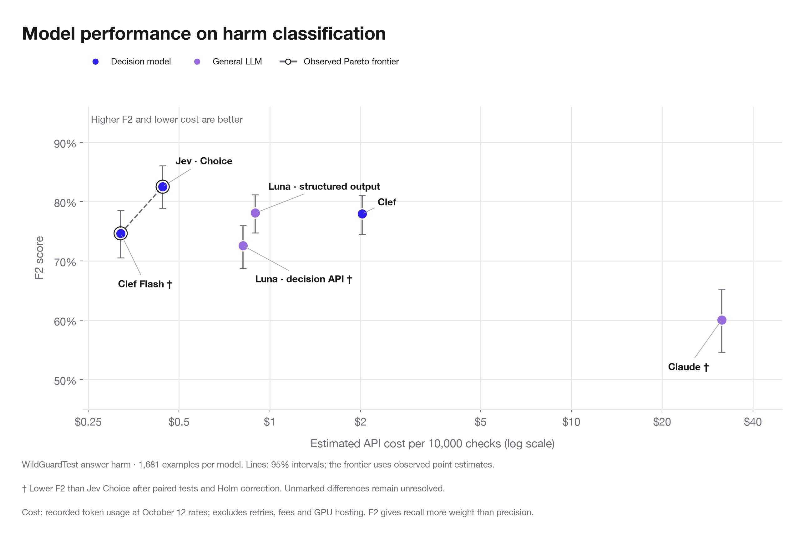
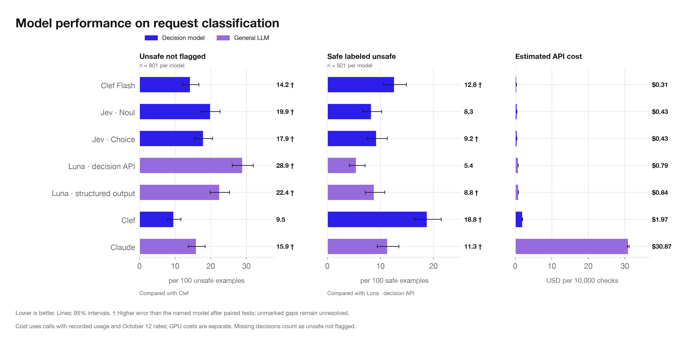
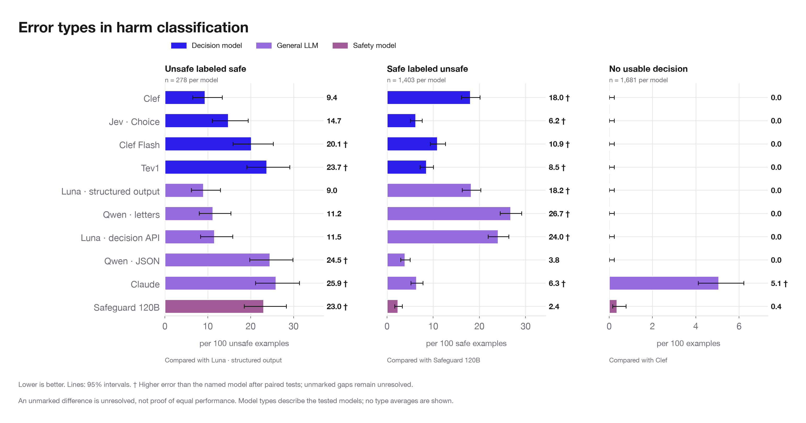

Analysis review
Read the evidence by the decision it can inform. Figure titles are awaiting your rewrite.
Four findings: lower cost can coexist with better detection; fewer misses can come with more false alarms; classifiers can fail to return a verdict; and source-topic boundaries can dominate disagreement.
These benchmarks support candidate selection for harm classification. They do not validate tool authorization, legal compliance, or deployment without further evaluation.
The policies were revised after examining disagreements with source labels. These results are exploratory, not a fresh held-out test. Labels remain unchanged; XSTest results are reused. The intervals capture sampling uncertainty, not uncertainty in the labels or policy interpretation.
Costs use recorded token usage and historical October 12 rates. They exclude retries, gateway fees, and GPU deployment costs. Error rates use the published labels as the reference. No alert precision or production cost is implied without the intended traffic mix.
MAIN · response_value
Decision: Choose an API model for checking an assistant answer before showing it to a user.
Title proposal for your rewrite: Model performance on harm classification
What the results show: The observed F2–cost frontier contains Clef Flash ($0.32 per 10,000 checks; 74.6% F2) and Jev Choice ($0.44; 82.5%). The other four hosted interfaces have both higher estimated cost and lower observed F2 than Jev Choice. The F2 differences from Clef and Luna structured output remain statistically unresolved.
How to use this: The frontier identifies the observed cost/quality tradeoff on this answer-harm benchmark, not statistically established dominance or a production guarantee. F2 weights recall more than precision; inspect the separate error-type chart before choosing automatic blocking or review. Historical API cost excludes the work created by false alarms and missing verdicts.

MAIN · request_value
Decision: Choose an API model for checking a request before the assistant answers.
Title proposal for your rewrite: Model performance on request classification
What the results show: Clef has the lowest observed miss rate for unsafe requests, with more false alarms than most alternatives. Clef Flash costs less per check but misses more unsafe requests. Price and exact agreement alone hide this choice.
How to use this: For screening before an assistant answers, shortlist according to the consequence of a miss versus an unnecessary block. A human-review queue may tolerate more flags than an automatic refusal system.

MAIN · response_failures
Decision: Decide whether missed harm, false alarms, or a missing verdict requires a fallback.
Title proposal for your rewrite: Error types in harm classification
What the results show: A wrong safe label and no usable verdict require different handling. Claude sometimes refuses the classification task itself; that contributes to its unsafe examples not flagged. General LLM interfaces also differ substantially: Qwen JSON produces fewer false alarms than Qwen letters, but more wrong safe labels.
How to use this: Define what happens when the checker cannot decide: block, retry, or route to review. These figures measure classifier behavior; they do not assume that a deployed system lets missing verdicts pass. The evidence supports comparisons between tested models and interfaces, not a blanket ranking of model types.

MAIN · topic_failures
Title proposal for your rewrite: Harm classification performance by topic
Failure patterns differ sharply by source topic. The selected request-only slices include 62 source-unsafe privacy requests, 40 advice requests, 40 self-harm requests, and 84 profanity requests. All tested models disagree with most of the advice labels, while many detect most of the self-harm and profanity cases.
A general harm benchmark cannot establish suitability for a specific risk domain. Audit the policy boundary and representative examples before interpreting a topic-level miss as real-world danger. The advice gap is shared across model types and needs policy/label review.

Policy and answer-choice checks: On 12 conversations, replacing detailed guidance with a short policy changed zero to two judgments per model. Expanding answer choices changed at most one per model and condition. Neither comparison established an accuracy improvement. These probes are too small to choose a policy length or answer format with confidence.
Inspect policy conditions, repeatability, and the advice-label cases.